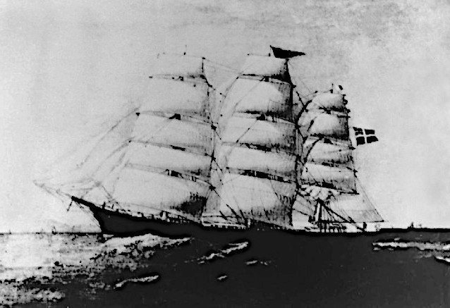
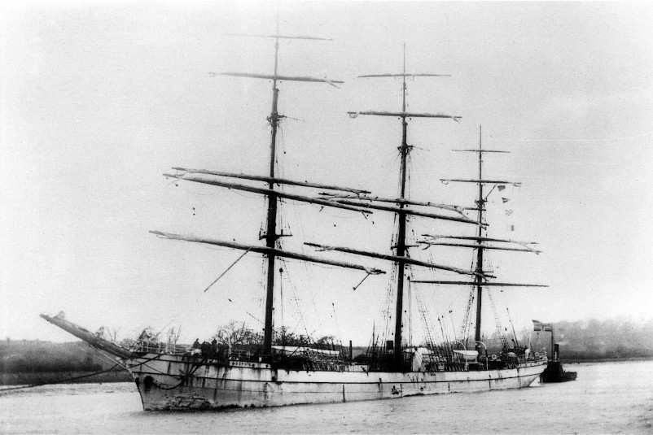

-
Who left Germany - Part 1
Many of our ancestors departed from areas which now belong to Germany. In their day, those places might have been part of Prussia or some other Kingdom left over after the dissolution of the Holy Roman Empire. The migration of these people was the responsibility of an agent and the majority of the following had their passage arranged by » J. C. Heussler and Co., Agents. -

Cesar Godeffroy
dep. Hamburg 25 Oct 1861
arr. Moreton Bay 30 Feb 1862
Captain: Jacob Fürchtenicht
Agent: G. Raff & Co.The Lobegeyer family on board the Cesar Godeffroy
1861 August and Caroline Lobegeyer
Friedrich Wilhelm August Lobegeyer, his wife Caroline Wilhelmine Louise Witte and seven of their children left their home in Charlottenhof in the Uckermark near the start of the wave of German migration to Queensland.The large family left Hamburg on board the Cesar Godeffroy under the command of Captain Jacob Fürchtenicht on the 25th October 1861 and arrived in Moreton Bay on February 30th the next year.German Labor on offer in the Brisbane Courier 27 Feb 1862
Charlottenhof belonged to the von Arnim family as a » Vorwerk, a type of farm. Although nothing remains of the settlement (known in German as a 'Wüstung'), the location is recorded as being about 2.5 km north of Stegelitz, now called Flieth-Stegelitz, and about 250m from the eastern shore of the 'Grosse Lanke', the lowest arm of the Upper-Ucker-Lake (Oberuckersee).
The children of the Lobegeyer family are many times tied to the Schneiders. For instance, the second eldest son, Frederick, married Ernestine Wolter in Ipswich in 1870 and they had a daughter named Annie who married Johann Heinrich Schneider (the younger), our great-grandfather. The youngest son, August, who was only two years old on the voyage, eventually married Friederike Christine Schneider, who was Johann Heinrich's half sister. The youngest daughter, Johanna Ernestine Caroline Lobegeiger (already with name variation), married Pastor Carl Krüger, who was another good friend of Johann Heinrich Schneider.
-

La Rochelle
dep. Hamburg 17 May 1863
arr. Moreton Bay 7 Aug 1863
Captain: J. Junge
Agent: J. C. Heussler & Co.The Piepers on board the La Rochelle
1863 Johann and Louise Pieper
Johann Friedrich Wilhelm Pieper and his first wife Louise Emily Primus along with three of their children, departed Hamburg on board the La Rochelle on the 17th of May, 1863 and sailed into Moreton Bay on August 7. A few more days were spent on board awaiting the health officer's full approval.
Posttcard Angermünde
Günterberg, Angermünde, Uckermark
The Pieper family came from Günterberg, a part of Angermünde in the Uckermark district of Preussen where they had lived on the land. Hence Johann's position was declared as 'Landmann'. The La Rochelle under the command of Captain Junge, carried the 444 German immigrants safely to their destination in a very excellent run of just 81 days. There was also one passenger in the saloon who was Mrs. Amalie Dietrich, the famed naturalist working for the Godeffroy Museum in Hamburg. This was just one of her many trips to Australia for research and collecting specimens. All the passengers upon arrival were inspected by Dr. Hobbs, the health officer who found them all in a perfectly healthy state.
-
La Rochelle
dep. Hamburg 28 May 1864
arr. Moreton Bay 5 Sep 1864
Captain: J. Junge
Agent: J. C. Heussler & Co.
Heinrich, Rosina and daughter on board the La Rochelle
1864 Heinrich and Rosina Schneider
Johann Heinrich Schneider, known as Heinrich and later as Henry, was a master stone mason from Eberstadt in the district of Weinsberg in the Kingdom of Württemberg. He and his wife, Rosina Friederike Eckert and their 8 month old daughter migrated to Australia on board the La Rochelle. The ship departed Hamburg at the end of May, 1864 and after a very good passage taking 95 days arrived in Moreton Bay on Saturday, September 3.
The Procession to bury King Wilhelm who had died in June 1864, only one month after Johann Heinrich had left.
Strangely, if it had been for political reasons that the family migrated at that time, things were about to significantly change in Württemberg because the King died a month later. It is more likely though that monetary and personal concerns were greater considerations.
Altogether there were 184 German migrants on board the La Rochelle along with 250 tons of general merchandise all bound for the recently created Colony of Queensland. Of those passengers, 107 were unmarried males and only four were unmarried females with the rest being married couples and their children. The disproportion was the result of regulations enforced at the point of departure in Hamburg which almost prohibited the migration of families. After very little sickness during the voyage, they were all in good health upon arrival.
-

Susanne Godeffroy
dep. Hamburg 19 Sep 1863
arr. Moreton Bay 18 Jan 1864
Captain: H. Müller
Agent: J. C. Heussler & Co.
The Lobegeigers on board the Susanne Godeffroy
The arrival of the Lobegeiger family in Brisbane
1864 Wilhelmine (Topp) Lobegeiger
One of the Lobegeiger branches of our family stems from Stegelitz in the district of Templin in the Uckermark of Brandenburg, Preussen. Stegelitz is a medieval village first mentioned in 1269 but decimated by the Thirty Year War and newly resettled in the early eighteenth century. Whatever the reason, in 1864, Gottlieb Lobegeiger and his family migrated from Stegelitz to Australia.Stegelitz on the map
The trip was a rough one, starting immediately with severe weather which detained the ship 15 days in the North Sea. That was followed by contrary winds between the British Coast and Madeira. The trade winds carried her to the Cape of Good Hope but from there to the island of Tristan d'Acunha again there was heavy weather which sprung the main mast, foremast, foretopmast and fore yard. Nonetheless, from there, Tasmania was made in 30 days and Cape Moreton in another ten. Dr. Hobbs, the health officer, visited the ship on the evening of Tuesday the 19th and found the 369 German immigrants, many of whom were skilled workmen, in good health. This was the first journey for the newly built Susanne Godeffroy and the ship made the run in 98 days.
Tragically Gottlieb died three years after arriving. His wife, Wilhelmine (nee Topp) remarried two years later. Her new husband was our g-g-grandfather Johann Heinrich Schneider, Henry senior.
-
Beausite
dep. Hamburg 23 Oct 1864
arr. Moreton Bay 6 Feb 1865
Captain: Bruhn
Agent: J. C. Heussler & Co.
26 year old Friedrich on board the Beausite
1864 Friedrich Suchting
As the ship's records show, the 26 year old Friedrich Suchting, an agriculturalist (Landmann) from Ahrensbök in Holstein, boarded the Beausite to head off to Australia. The 932 ton Beausite departed Hamburg 23 October 1864 and arrived in Moreton Bay on 6 February 1865 under the charge of Captain Bruhm with C. Heussler and Co. as the agents.
An old postcard of 'Ahrenssböök' (as pronounced in 'Holstation')
The trip from coast to coast was made in 104 days and except for some contrary winds off the Canary Islands had a smooth passage through the Atlantic and all the way to Tasmania. Cape Moreton was reached after another 13 days. Of the 300 immigrants on board, one half were single men and a very small proportion were single women. On the 8th February, the families and single females were conveyed to shore by a steamer, the Diamond. Due to the violence of the wind the steamer was required to return the next day to fetch the single men.
Those on board the Beausite shared their trip with a mixed cargo. This included 220 cases, 22 casks of wines, 60 cases geneva, 20 casks cognac, 3 cases pianos, 1 case books, 1 case cooper's utensils, 370 barrels cement, 533 packages, 5 cases of seltzer-water, 50 cases candles, 10 bales hay, 10 cases furniture, 10 rams and 40,000 fire bricks.
-
Helene
dep. Hamburg 8 Apr 1865
arr. Moreton Bay 2 Aug 1865
Captain: P. H. Hennings
Agent: J.C. Heussler & Co.Wilhelmine with her family on board the Helene
1865 Wilhelmine Augusta Riek
The 366 ton Barque, Helene under Captain Hennings, departed Hamburg on the 8th of April 1865 and arrived in Moreton Bay on the 2nd of August 1865. Amongst the 150 passengers, were Friedrich Suchting's future wife, Wilhelmine Riek, together with her parents Friedrich and Dorothea and her younger brother Wilhelm. Dorothea's brother Christian Spann and his family had also gone along for the trip.
Old postcard from Potzlow
The Helene made a good run through mostly fine weather and on July 28, the 110th day, reached Cape Moreton, casting anchor on the 30th.
The passengers were transferred to shore on the evening of the 2nd. They were generally in good health during the trip with diseases being mostly pulmonary complaints, diarrhoea and others not of infectious character. In the northern seas five adults had died from diseases of the brain and two from lung disease. The only other death was that of a child from an infantile disorder. The major portion of the passengers were agriculturalists and travelled with assisted passage under the land-order regulations.
-

Sophie
dep. Hamburg 23 Apr 1865
arr. Moreton Bay 21 Aug 1865
Captain: Wendt
Agent: J. C. Heussler & Co.
The Schneiders on board the Sophie
1865 Georg and Henricke Schneider
By the time Georg and Heinricke migrated with five of their children to the new Colony of Queensland, their eldest son Johann Heinrich had already been there with his wife and child since the year before. Apparently Johann Heinrich had sent back such encouraging reports about the prospect of a new life in the new land that the idea of going there too was irresistible.Weinsberg (Doerr 1820)
So Georg, following in the footsteps of his son, packed up his family and made the 700 km trip to Hamburg from their home in Eberstadt in the district of Weinsberg. There they met up with their ship, the Sophie, which would take them to Australia. The Sophie departed from Hamburg under the command of Captain Wendt, on April 23, 1865 and arrived in Moreton Bay four months later, anchoring on August 17th. The 29 passengers who disembarked first needed a clean bill of health from the medical officer for which they had to wait until the 20th. On the 21st, the ship continued on with the rest of its 164 passengers and cargo to Maryborough.
-
Herschel
dep. Hamburg 2 Dec 1871
arr. Moreton Bay 12 Mar 1872
Captain: E. A. Friederichs
Ernestine and her sister Friederike on board the Herschel
1871 Ernestine Schulz
Ernestine Wilhelmine Schulz and her sisters Friederike, and Wilhelmine Christina hailed from Menkin in Pommerania, part of Prussia. The 18 year old Ernestine, 20 year old Friederike and 26 year old Wilhelmine sailed off from Hamburg to Australia on the Herschel on the 2nd of December 1871. Wilhelmine's husband August Friedrich Wilhelm Zimmermann and their baby daughter Ernestine accompanied the three sisters. After a passage of 96 days, having already sailed past Cape Moreton, the ship first anchored in Hervey's Bay and transferred the majority of the immigrants on board to Maryborough. The Maryborough Chronicle reported that "the passengers landed here are, in appearance, as fine a body of men and women as ever immigrated".
Old postcard of Menkin
Hurrah! The Brides Have Arrived
Upon approaching Maryborough, the steamer conveying the Herschel's passengers up the river created quite a bit of excitement. As it neared the crowds of awaiting relatives, friends, and migrant German men looking for wives, "the well known strains of 'Rhine Watch' resounding from several hundred lungs, fell on the ear. Thronging the deck in their quaint foreign-looking costumes, they sung as people only sing who have drunk month-long draughts of sea air, and whose hearts are light with the prospect of release from month-long confinement in a floating prison" (Maryborough Chronicle Tue 12 March 1872). The ship then proceeded further back down the coast with those passengers destined for Brisbane. This is where Ernestine and Friederike first set foot on Australian soil.
A New Life in a New Land
A few weeks after arriving, at the beginning of June, Ernestine's sister Friederike married Francis Victor Pfeffer who was a close friend and next door neighbour to Henry Schneider, our 2x great-grandfather. In October that same year, Ernestine who had just turned 19 a few months earlier, married a widower by the name of Johann Friedrich Wilhelm Pieper. Johann, the year before, had just lost his first wife Louise with whom he had migrated to Australia nine years earlier. So Ernestine not only gained a husband but also his seven children. She added five more to that number over the next ten or so years. One of those children, named Rudolph Pieper, was our great-grandfather.